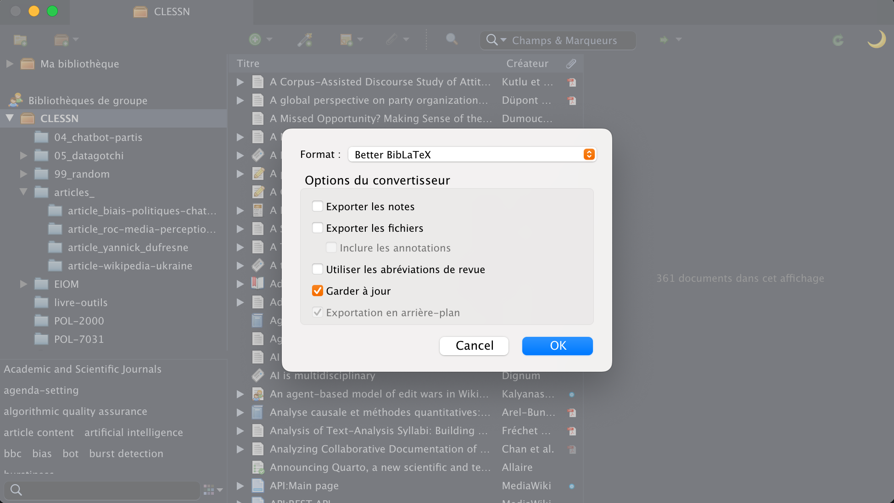

11 Installation de Biblatex et configuration de Zotero
11.1 BibLaTeX
BibLaTeX est une extension destinée au traitement des bibliographies dans LaTeX et Quarto, généralement associée à Biber, un programme conçu pour le traitement des données bibliographiques spécifiquement pour BibLaTeX. Biber propose des fonctionnalités avancées comme le tri poussé, la gestion de multiples bibliographies et la capacité de traiter des sources bibliographiques dans divers formats. Grâce à sa prise en charge étendue des langues, BibLaTeX est particulièrement adapté à la rédaction d’articles ou de livres pour un public international. Bien que BibLaTeX soit avant tout un package pour LaTeX, il est possible d’exporter des bibliothèques depuis des outils tels que Zotero sous forme de fichiers .bib, qui peuvent ensuite être exploités avec BibLaTeX. L’extension Better BibTeX permet de maintenir automatiquement à jour vos fichiers .bib à partir de Zotero. Il est recommandé de conserver uniquement les références utilisées dans votre fichier et de les organiser par ordre alphabétique, facilitant ainsi la coopération et le partage des sources.
Les inconvénients potentiels de BibLaTeX comprennent une courbe d’apprentissage plus accentuée pour ceux habitués à BibTeX, ainsi que le besoin de mises à jour régulières pour assurer la compatibilité avec les versions les plus récentes de LaTeX. En outre, certains éditeurs académiques ou revues possèdent leurs propres styles de citation et peuvent ne pas accepter les soumissions réalisées avec BibLaTeX, même si cette réticence tend à diminuer.
En conclusion, pour ceux qui cherchent à maximiser la flexibilité et la puissance de leurs outils de gestion de bibliographie dans LaTeX, BibLaTeX, en tandem avec Biber, offre une solution moderne et robuste.
11.2 Installation et configuration de Zotero
Dans cette section, vous serez amené notamment à installer Zotero ainsi que Better BibTeX. Better BibTeX est une extension de Zotero servant à générer et à maintenir à jour des fichiers .bib compatibles avec BibLaTeX, à partir de Zotero.
11.2.1 Zotero
Installer Zotero
Installer Zotero Connector
Une fois Zotero installé, vous avez l’option de créer un compte Zotero. L’identifiant que vous utiliserez sera celui que vous partagerez à vos collaborateurs pour créer et joindre des groupes.
11.2.1.1 Better Bibtex
- La prochaine étape sera d’installer Better BibTex. Pour ce faire, allez dans l’onglet tools > Add-ons ensuite cliquez sur l’icone de paramètre et faites Install Add-on From File. Sélectionnez le fichier .xpi que vous avez téléchargé.
IMPORTANT
Une fois le module complémentaire installé, accédez aux paramètres de Better BibTeX en allant dans l’onglet Zotero > Préférences > Onglet Better BibTeX > Ouvrir les préférences de Better BibTeX.
Il est important, lors de la collaboration, de s’assurer d’avoir les mêmes clés de citation que vos collègues. Better BibTeX peut s’assurer que vos clés respectent un format standard.
Voici une suggestion de format de clé de citation : il s’agit simplement du nom de l’auteur et de l’année de publication à deux chiffres. Pour l’utiliser, collez ceci dans la section Format de clé de citation :
authEtal2.fold.lower.replace(find=".",replace=_) + len + shortyear | veryshorttitle + shortyearAfin de vous assurer d’avoir les mêmes clés de citation, vous pouvez faire un clic droit sur vos références, aller dans les options de Better BibTeX et cliquer sur “Actualiser les clés de citation”
11.2.1.2 Génération du fichier .bib
Dans Zotero, vous devriez maintenant voir le groupe Zotero de votre équipe dans les Group Libraries.

Il est important de comprendre que tout changement que vous faites dans Zotero sera automatiquement synchronisé avec le groupe de votre équipe de travail. Ainsi, si vous supprimez une référence, elle sera supprimée pour tout le monde!
Clic-droit sur la collection livre-outils > Export Collection choisissez le format Better BibLaTex et cochez la case [x] Keep updated. Faites OK et sauvegardez le fichier dans le dossier .git du projet livre-outils. Ce dossier sera constamment mis à jour avec les changements que vous faites dans Zotero et sera synchronisé avec le projet Github quand vous ferez vos pull requests.

11.2.1.3 Utilisation de Zotero lors de l’écriture
Lors de l’écriture, vous n’avez qu’a écrire @ dans votre éditeur pour faire sortir la palette de référencement.
11.2.1.4 Ajouter des références à Zotero
Il y a différentes façons d’ajouter des références à Zotero :
- Glisser-déposer à partir de votre bibliothèque personnelle.
- Glisser-déposer les PDF que vous avez sur votre ordinateur dans la collection Livres-Outils. Zotero va essayer de trouver les métadonnées automatiquement.
- Si cela ne réussit pas, vous pourrez ajouter la référence en cliquant sur la baguette magique en haut à gauche du symbole “+” vert. L’outil de la baguette magique est utile si vous possédez le DOI ou l’ISBN de l’article/livre que vous devez ajouter. Dans les rares cas où Zotero ne trouve rien concernant votre référence, vous pourrez remplir les différents champs manuellement.
- Utiliser le connecteur dans votre navigateur. Zotero tentera également de télécharger l’article directement et de l’inclure dans la collection appropriée.